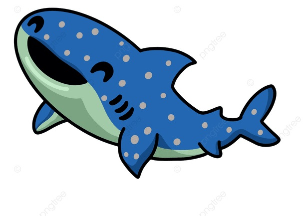
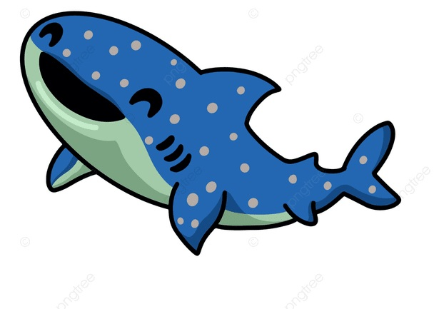

텍스트 꾸미기
진하게
중요한 표시
강조
이텔릭 강조
진하게 이텔릭 강조
우리는 열공
취소선
보통 문자의 윗첨자
보퉁 문자의 아랫첨자
하이라이트
감 사
내가 사랑의 방언과 천사의 말을 하더라도
사랑이 없으면 소리나는 구리와 꽹가리가 되고,
사랑이 없으면 아무것도 아니라.
- 우리 서로 사랑하며 살아요 -
그림 꾸미기
내가 좋아하는 동물

 

라면 끓이는 순서
- 물을 끓인다
- 라면과 스프를 넣는다
- 파, 양파, 마늘, 당근을 썰어 놓는다
- 5분 후 먹는다
내가 좋아하는 점심 메뉴
- 오봉국수
- 남자탕
- 순대국
- 생선까스
- 편의점 도시락
중첩 리스트
-
- 오봉국수
- 남자탕
- 순대국
- 생선까스
- 편의점 도시락
-
- 물을 끓인다
- 라면과 스프를 넣는다
- 파, 양파, 마늘, 당근을 썰어 놓는다
- 5분 후 먹는다
- 여름에는 바다로
- 가을에는 산으로
- 겨울에는 스키장으로
웹 브라우저 종류
- Internet Explorer
- 마이크로 소프트에서 만든 브라우저로 퍼스널 컴퓨터에서 많이 사용하는 브라우저이다.
- Firefox
- Mozilla 재단에서 오픈 소스로 만든 브라우저로써 웹 표준을 선도하는 브라우저이다.
- Chrome
- Google에서 만든 브라우저로써 현재 개발자들이 가장 많이 사용하고 있으며 호환성이 좋은 브라우저이다.